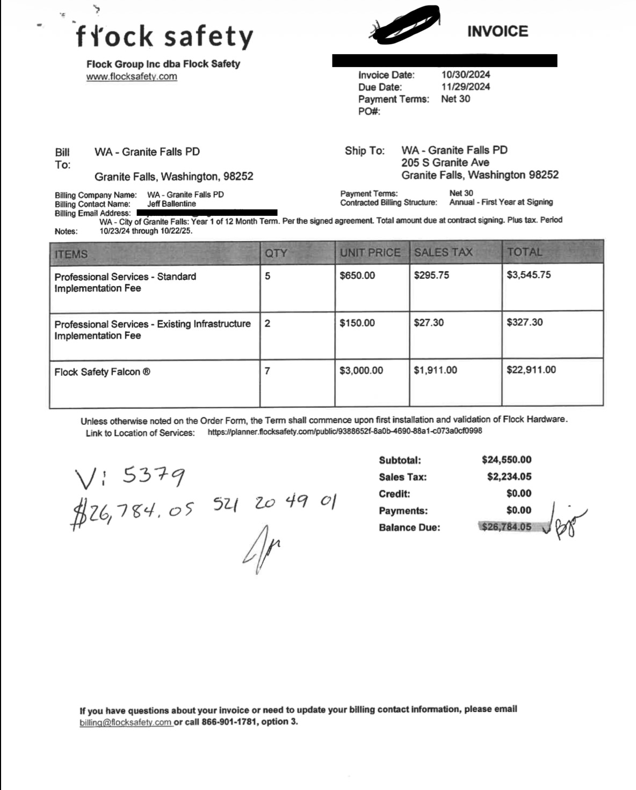
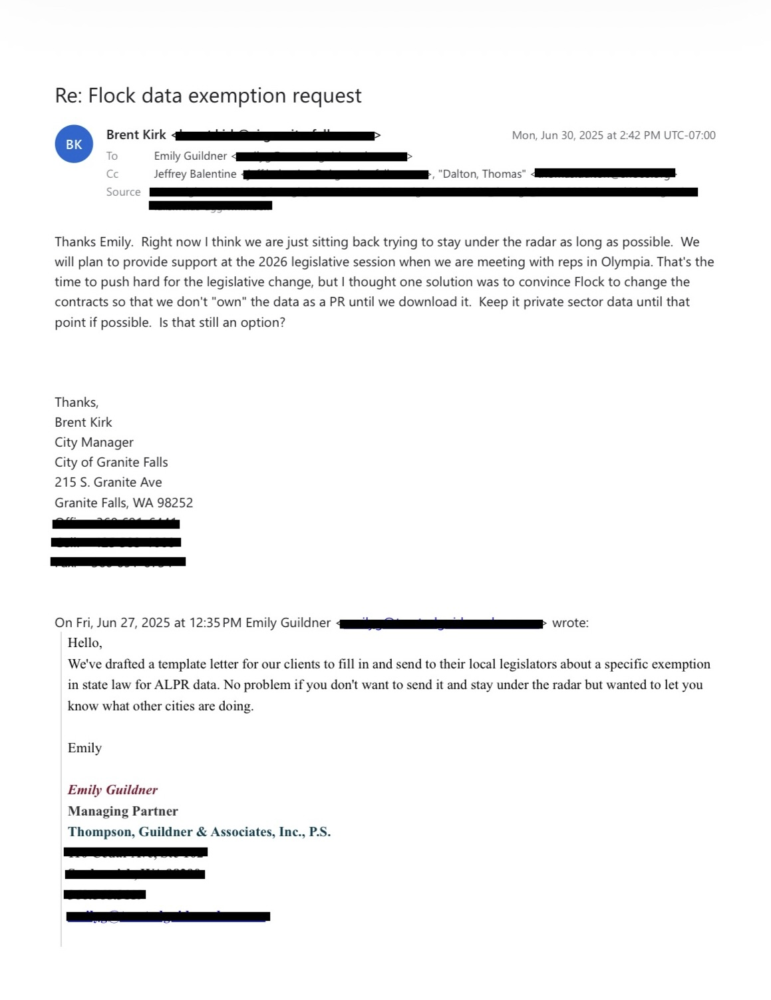
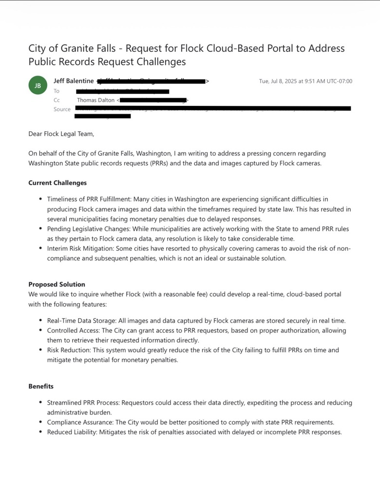
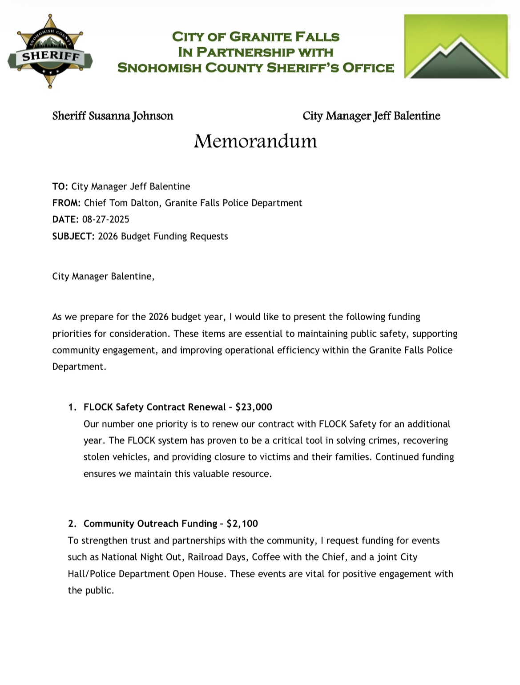
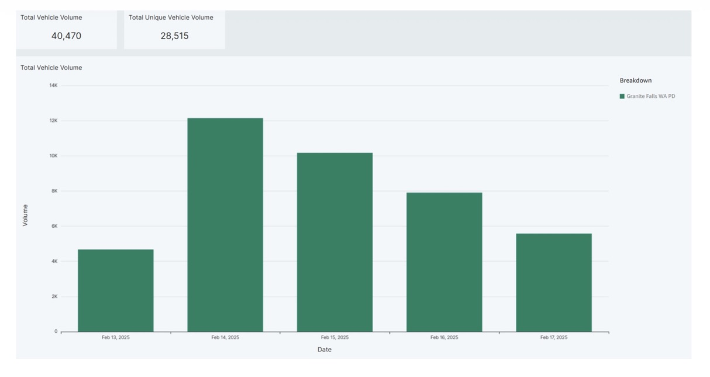

What is already in the record.
Key Granite Falls documents, the completed City production and the operational records still pending from SCSO.
Contract, invoice, permit, correspondence and law.

Flock invoice
Seven Falcon cameras, implementation charges, $26,784.05 total and Oct. 23–Oct. 22 annual service period.

City / police / counsel correspondence
Public-records strategy, legislative advocacy and discussion of remaining “under the radar.”

City ↔ Flock Legal
Granite Falls request for a cloud-based public-records solution.

2026 police budget memorandum
Flock renewal listed as the department’s number-one funding priority.

Flock vehicle-volume dashboard
Five-day sample from five active cameras showing 40,470 total reads and 28,515 unique vehicle reads.
The City request is finished; the SCSO request remains open.
- City of Granite Falls: City Clerk Darla Wilkins states that Installment 6 was the sixth and final City installment and that all responsive records currently in the City’s possession have been produced.
- Items referred to SCSO: the City identified request items 5, 6, 7, 8 and 10 as Snohomish County Sheriff’s Office matters.
- SCSO request K227577-050426: remains open for ALPR policies/procedures, access information, Attorney General registration material, audit/search/access logs, outside-agency access records, correspondence and camera-status material.
- Next current estimate: SCSO has stated that the next installment is expected on or before Nov. 23, 2026.
A separate County tracking number, K252082-091826, was created after Chief Dalton initially treated a nine-question email as a public-records request. The questions were later answered directly. This site distinguishes that process from the separate, intentionally filed SCSO records request above.
Excerpts are used for readability.
Screenshots may be cropped to the relevant part of a record, and personal contact or financial information may be redacted. Substantive wording is not rewritten inside the images. Full primary documents are linked where available.